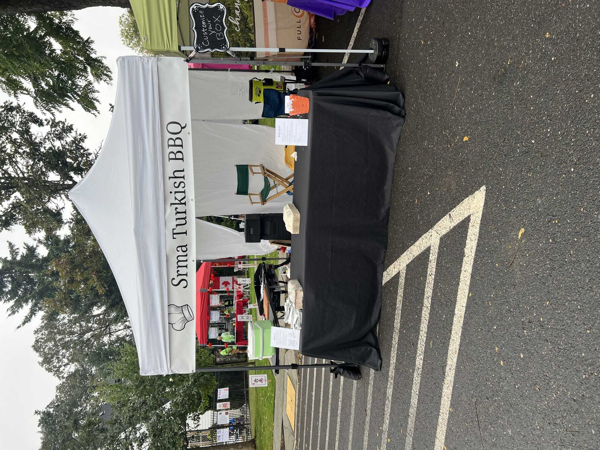
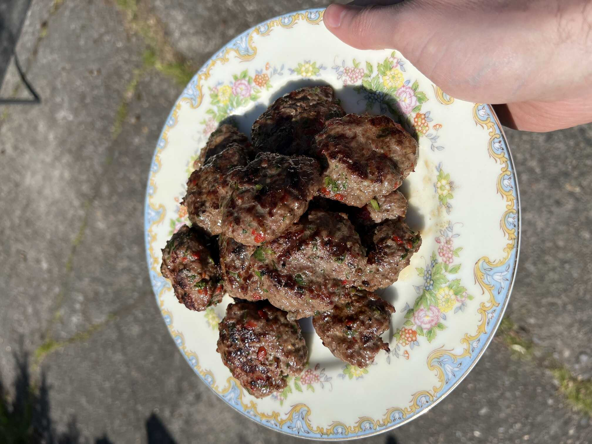
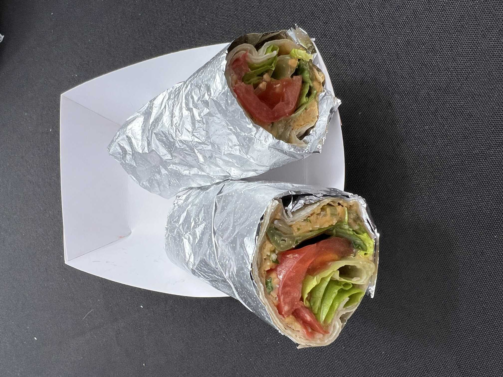
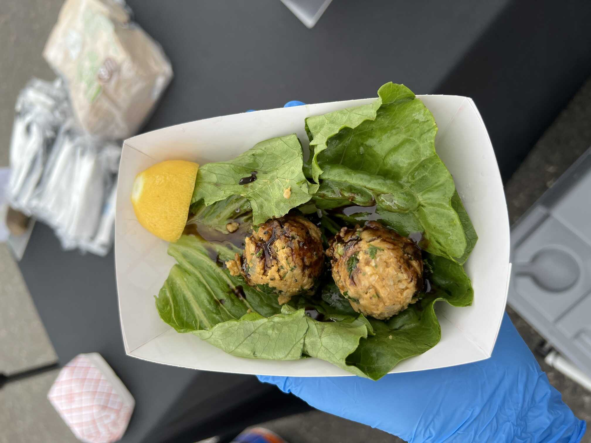

Authentic Turkish BBQ Food Stand & Catering
Srma is a family owned and operated food business based in Vancouver, Washington. Chef Ayten shares tastes inspired by her parents' restaurant in Türkiye, reflecting the rich tradition of Turkish barbecue.
Find Us
We are excited to be operating at the locations and events listed below. We'll update here as our plans finalize for 2026.
Vancouver Farmers Market
Esther Short Park
605 Esther St, Vancouver, WA 98660
Fall & Winter Season, through March
Saturdays, 10am-2pm
Summer Season, April - October
Saturdays, 9am-3pm
Sundays, 10am-3pm
Contact Us
We are open to event invitations and catering requests. Please send us an email to get in touch:info@srmafood.com